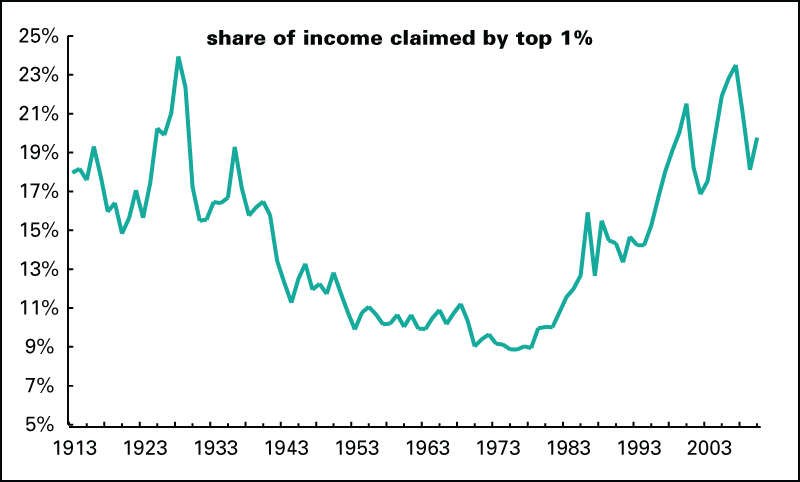

In the late 1910s and early 1920s, courts often ruled in favor of businesses instead of workers. This was even the case during 1918 Hammer v Dagenhart, where Ronald Dagenhart tried to invoke the 10th amendment to enforce a profit when his child was involved with selling a product. He lost the case, and legislation ruled against the poor once again. Calvin Coolidge’s presidential realm came at a time where most of the poor, mainly farmers, suffered while most of the rich were prospering. In fact, it was during his regime that the highest income inequality rate to that date occurred as by 1928, the top one percent of families received 23.9% of all pre-tax income, while about 60% made less than $2,000 annually, which was the minimum livable amount for a family.
After being elected President, Coolidge’s first action was limited aid to farmers. In fact, Coolidge explicitly stated that “well, farmers have never made much money” as reasoning to limit government resources to help them. A farm relief bill was created and backed by the secretary of Agriculture, Henry C. Wallace in 1923-1924, but was ultimately rejected by Congress, leaving farmers helpless. In subsequent years, Coolidge killed off two more farm relief bills, leaving those in poverty in shambles throughout the whole decade. Here, a lack of governmental help towards the farming community increased poverty, and rather prioritized the rich with government funding.
In addition to blocking multiple plans for farm relief, Coolidge killed a plan to produce cheap Federal electric power on the Tennessee River. The Muscle Shoals Bill was created to build a dam in the Tennessee River and sell cheaper government-produced electricity. While Congress passed the bills, both presidents Coolidge and Hoover killed the idea because they didn’t want to waste resources and rather preferred private enterprises to fill that void. Despite not willing to shed money on the electricity, Coolidge did sign two revenue acts that reduced taxes on the wealthy. By keeping the cost of energy higher, legislation once again harmed the poor during the 1920s as it forced those already making under $2,000 annually to divert a significant portion of their budget to cover energy costs, which often raised the prices of other necessities as well. In addition, by choosing to reduce taxes on the wealthy, legislation chose to divert funds away from the poor and to benefit the rich, not combatting the glaring problem of income inequality. 
Data from Pew Research Center showing the black poverty rate in comparison to that of whites.
Data from the North Carolina Public School Executive Summary demonstrating the low academic performance of schools with a large poverty percentage.
In 1996, Bill Clinton signed the Personal Responsibility and Work Opportunity Act, which was meant to move families from welfare to work. In the late 1990s, there was some success, but 25 years later, the program has been regarded as a failure in regard to helping the poor. While the Temporary Assistance for Needy Families (TANF) was a program created specifically to help those in need get work, only 8% of TANF’s total funding goes toward employment preparation services. In addition, as the cost of living has increased over the 25 year span, TANF’s funding hasn’t increased at all, but rather has stayed stagnant at $16.5 billion. When the program began in 1996, two thirds of families with children living below the poverty line were helped by TANF, but currently, less than one fourth of those same families are being helped by the welfare program, a significant decline.
In addition, other government legislation like the energy and environmental policy have attributed to the ongoing poverty impacting those in need. Policies and government regulations have caused more Americans to shift bills towards energy costs, rather than necessities like food and medical insurance. Americans with incomes of under $30,000 after taxes reportedly spent 23% of their budget towards energy costs, compared to the measly 7% of the middle and upper classes. Since energy is such an essential in the economy, increases in energy prices stemming from governmental policies have also led to increases in price for food, healthcare, education, clothes and other important daily needs. The Department of Energy(DOE) regulates sixty different products as a result of the 1975 Energy Policy and Conservation Act, and these regulations have not been kind to the poor. The DOE’s regulations best work for families who can pay more upfront, which are mainly middle and upper class, and in return give more long-term benefits to incentivize that action. However, this comes at a disadvantage for the poor, swho can’t afford to pay more upfront, and therefore have to use more of their budget to cover their energy costs.
Along with the energy and environmental policy, the government’s food and agriculture policy, specifically the Federal Sugar Program, contributes to the poverty issue. The federal government has wanted to limit the amount of sugar made in the U.S., attributing a price support to limit the amount sold and imported into the U.S. As a result, the price of sugar has raised to double the world prices, and while it helps sugar growers, the rest of the economy suffers from the governmental policy. In addition, this harms sugar-using industries, and increases the prices of food involving sugar, which harms the poor the most, as a greater share of their income goes towards food purchases when compared to people in higher social classes. The government’s intentional regulation on supply has made life difficult, specifically for the poor, describing another way in how legislation has directly harmed those facing poverty.
Recently, several states have started increasing their minimum wage as a form of legislation to help the poor. California and New York have raised the price to $15 an hour, while Arizona, Colorado, and Maine have all raised their minimum wage to $12 an hour. While this may seem like helpful legislation for the poor, it actually will harm the community as a whole in the future. When the price for workers increases, the result is a loss of job availability due to the reluctance to increase the cap for payroll, and if workers cannot get that first opportunity, those chances to rise out of poverty into a second or third job decrease significantly, keeping many more still in poverty. By 2023, California’s new $15 minimum wage is expected to eliminate 900,000 jobs, while New York’s increase is expected to eliminate over 400,000 jobs. In fact, this policy will hit the least educated people of society the most. As companies are required to pay more for minimum wage workers, they may be more inclined to hire a person of more education like a high school graduate because they are already spending more money, which in result could freeze vulnerable workers from the workplace, not solving poverty.